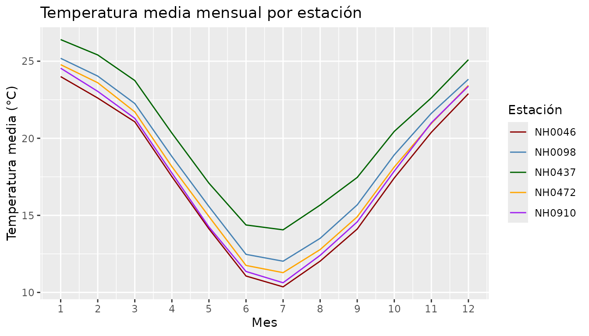
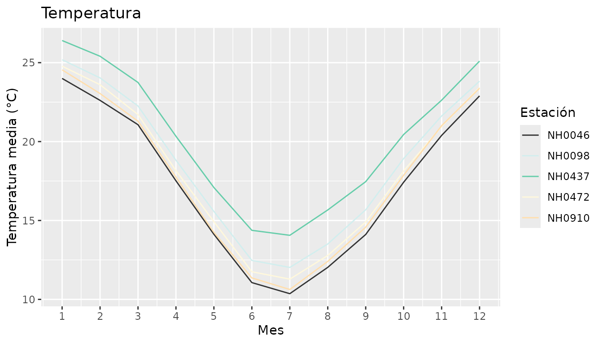

MeteorologicoR reúne las funciones que desarrollamos durante los trabajos transversales de Programación II para trabajar con datos de estaciones meteorológicas del INTA. En esta viñeta mostramos cómo se usa cada una.
Los datos
El paquete incluye estaciones, un data.frame con las
mediciones diarias de cinco estaciones de Santa Fe entre 1961 y
2023:
head(estaciones)
#> id fecha temperatura_abrigo_150cm temperatura_abrigo_150cm_minima
#> 1 NH0472 1961-07-01 11.1 8.8
#> 2 NH0472 1961-07-02 5.5 0.5
#> 3 NH0472 1961-07-03 6.0 1.2
#> 4 NH0472 1961-07-04 NA 7.0
#> 5 NH0472 1961-07-05 12.4 10.0
#> 6 NH0472 1961-07-06 11.0 5.5
#> temperatura_abrigo_150cm_maxima precipitacion_pluviometrica
#> 1 13.4 0
#> 2 10.5 0
#> 3 10.8 0
#> 4 NA 0
#> 5 14.8 0
#> 6 16.5 0
#> humedad_media_8_14_20
#> 1 81
#> 2 80
#> 3 62
#> 4 93
#> 5 92
#> 6 80Son 95681 filas y siete columnas: el código de la estación, la fecha, tres columnas de temperatura, la precipitación y la humedad.
unique(estaciones$id)
#> [1] "NH0472" "NH0910" "NH0046" "NH0098" "NH0437"Resumir las temperaturas
tabla_resumen_temperatura() toma un data.frame con
mediciones y devuelve el promedio y el desvío estándar de la temperatura
de abrigo a 150 cm para cada estación:
tabla_resumen_temperatura(estaciones)
#> # A tibble: 5 × 3
#> id promedio desvio
#> <chr> <dbl> <dbl>
#> 1 NH0046 17.3 5.90
#> 2 NH0098 18.6 5.98
#> 3 NH0437 20.2 5.77
#> 4 NH0472 18.0 5.94
#> 5 NH0910 17.7 6.12NH0437 es la más cálida en promedio y NH0046 la más fresca. El desvío es parecido en todas, entre 5.8 y 6.1 °C.
La función funciona igual con una sola estación:
tabla_resumen_temperatura(subset(estaciones, id == "NH0437"))
#> # A tibble: 1 × 3
#> id promedio desvio
#> <chr> <dbl> <dbl>
#> 1 NH0437 20.2 5.77Graficar el ciclo anual
grafico_temperatura_mensual() calcula el promedio
mensual y lo grafica con una línea por estación:
grafico_temperatura_mensual(
estaciones,
colores = c("darkred", "steelblue", "darkgreen", "orange", "purple"),
titulo = "Temperatura media mensual por estación"
)
El ciclo tiene la misma forma en las cinco: máximo en enero, mínimo en julio, con una amplitud de unos 17 °C. Las curvas corren casi paralelas, así que las estaciones se diferencian por el nivel general de temperatura y no por la forma del ciclo.
Los dos argumentos opcionales tienen valores por defecto. Si no indicamos colores, la función elige cinco al azar y avisa; si no indicamos título, usa “Temperatura”:
grafico_temperatura_mensual(estaciones)
#> No se indicaron colores, se eligieron 5 al azar.
Leer los datos de otra estación
Las funciones anteriores trabajan con los datos que ya vienen en el
paquete, pero el INTA tiene muchas estaciones más.
leer_estacion() descarga y lee cualquiera de ellas a partir
de su código:
otra <- leer_estacion("NH0098", "datos/NH0098.csv")Si el archivo ya está en esa ruta, la función lo lee directamente en vez de volver a descargarlo, y avisa cuál de los dos caminos tomó.
Cuando algo sale mal
Las tres funciones revisan sus argumentos antes de hacer nada y cortan con un mensaje claro:
tabla_resumen_temperatura("hola")
#> Error in `tabla_resumen_temperatura()`:
#> ! El argumento datos debe ser un data.frame.
#> ℹ La variable ingresada es un character.
tabla_resumen_temperatura(data.frame(id = "NH0437"))
#> Error in `tabla_resumen_temperatura()`:
#> ! La tabla no tiene la columna temperatura_abrigo_150cm.
grafico_temperatura_mensual(estaciones, colores = c("red", "blue"))
#> Error in `grafico_temperatura_mensual()`:
#> ! Faltan colores para graficar todas las estaciones.
#> ℹ Hay 5 estaciones y se indicaron 2 colores.